第 26 讲：数据库前传——文件存储（6.3）
在前面的课时中，我们完成了两项振奋人心的里程碑：
1. 前后端集成联调：利用 CORS 中间件与环境变量，打通了浏览器客户端与 FastAPI 后端；
2. 算法能力落地：接入了 pypinyin 与 snownlp，让“文字实验室”真正能够计算出汉字拼音与情感量化分值。
然而，当前的系统依然存在一个根本性的硬伤——它没有任何“记忆”。 * 用户在页面输入一段话分析，结果刚出来；只要再分析下一句，前一条记录就消失了； * 随手按 F5 刷新网页，历史内容空空如也； * 如果在终端停止并重启后端服务，此前所有计算过的数据彻底烟消云散。
它就像一台老式的掌上计算器：按一下算一下，算完就忘。
本讲我们正式拉开数据持久化存储体系的大幕。在引入大型关系型数据库之前，我们将从计算机最基础的存储形态——文件系统（File Storage）切入，亲手搭建一套基于 JSON 的持久化读写引擎，理解时区与 UTC 黄金法则，并直面高并发下文件存储遭遇的三大致命天花板（性能雪崩、脏读脏写、全盘损毁），彻底理解数据库诞生的必然逻辑。
flowchart TD
subgraph StorageLandscape ["计算机四大存储载体形态"]
direction TB
RAM["1. 内存 (RAM)<br/>纳秒级超高速 / 易失性 / 进程停则数据亡"]
File["2. 本地文件 (File/Disk)<br/>毫秒级 / 持久化落盘 / 适合简单整块存取"]
DB["3. 数据库 (Database)<br/>文件底层 + B+树索引 + 事务 ACID + 高并发互斥"]
Cloud["4. 对象存储 (Object Storage)<br/>海量非结构化静态大文件 (图片/音视频)"]
RAM -.->|断电易失| File
File -->|并发/性能撞墙，演进为| DB
end
subgraph FileStorageLimits ["文件存储的三大天花板 (为何需要数据库?)"]
direction TB
Limit1["1. 性能雪崩 (I/O 放大)<br/>增一条须全量重写万行"]
Limit2["2. 并发竞态 (脏读与脏写)<br/>前后脚覆盖导致数据丢失"]
Limit3["3. 缺乏事务保护 (一坏全坏)<br/>半途掉电导致 JSON 格式损毁"]
end
StorageLandscape --> FileStorageLimits
FileStorageLimits -->|呼唤事务引擎| NextStep["第 27 讲：SQL 与 SQLite 数据库"]
1. 业务痛点：为什么必须拥有持久化？
(参考时间: 00:01)
在当前的文字实验室中，数据呈现出典型的“用完即弃”状态：
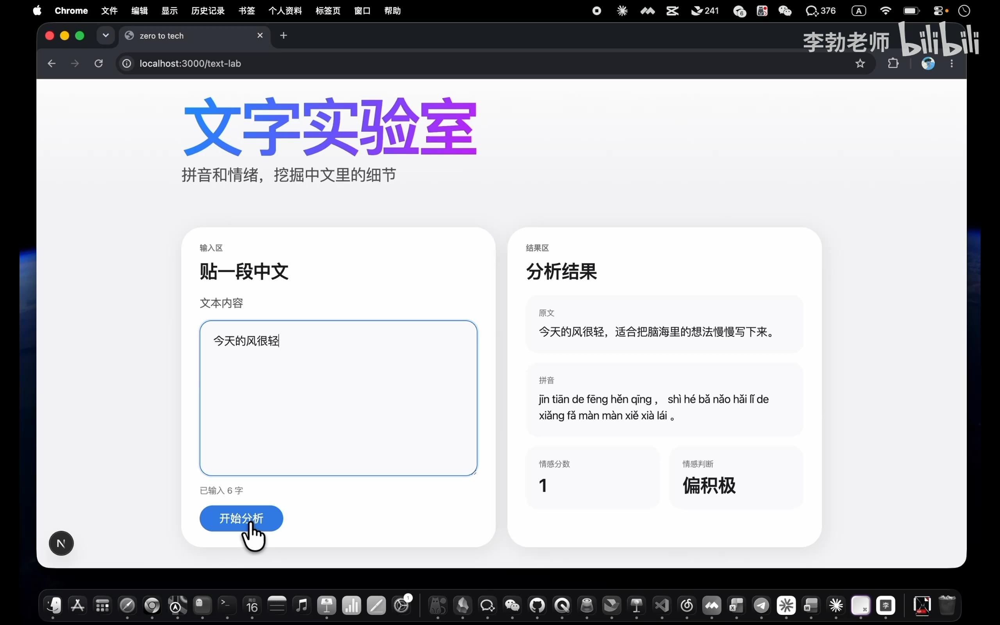
📷 文字实验室分析数据用完即弃的现状演示
在 B 站中打开 (00:00:40)
没有记忆到底有没有关系？我们必须分两个视角来看：
* 用户视角：对于一个轻量级的查询小工具，用户查完拿到结果就走，是否记住上次的内容或许感知不强；
* 运营者与产品视角：如果不做记录，损失将是灾难性的！
* 我们无法获知每天到底有多少人次使用；
* 我们无法统计用户最常输入的关键词与高频领域；
* 我们更无法回溯评估 snownlp 模型在用户真实语料下的准确度表现。
数据是软件产品最宝贵的资产底座。只有把数据永久存下来，后续的运营分析、算法迭代与业务沉淀才有可能展开。
在计算机科学中，让程序把易失性的数据保存到不易失的存储介质上、即使重启后依然可用的过程，被称为持久化（Persistence）。
2. 存储本质与计算机存储层次
(参考时间: 02:40)
说到存储，很多初学者的第一反应就是：“那必须马上装个数据库！” 但工程逻辑有着严格的先后顺序：先有了存储信息的需求，才逐步催生出各种存储介质与数据库软件。
存储的需求远比计算机本身古老得多：从几千年前原始社会的结绳记事，到刻在泥板、记在账本、归档于档案柜，都是存储信息的形态。
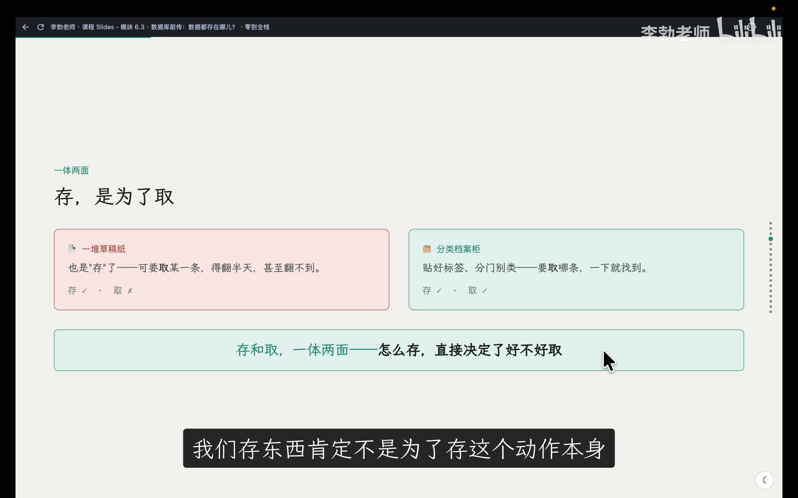
📷 人类存储历史演进与存取一体两面哲学
在 B 站中打开 (00:04:10)
[!IMPORTANT] 存与取的“一体两面”哲学： 1. 我们存东西绝非为了“存”这个动作本身，而是为了未来能够高效、准确地取出来； 2. 怎么存，直接决定了未来好不好取。一堆胡乱堆叠的草稿纸是存储，一个贴好标签、分门别类的档案柜也是存储。两者的根本差异，全部暴露在“取数据”的那一瞬间。
计算机中的四大存储载体
在现代计算机体系中，数据通常流转于四种主要空间：
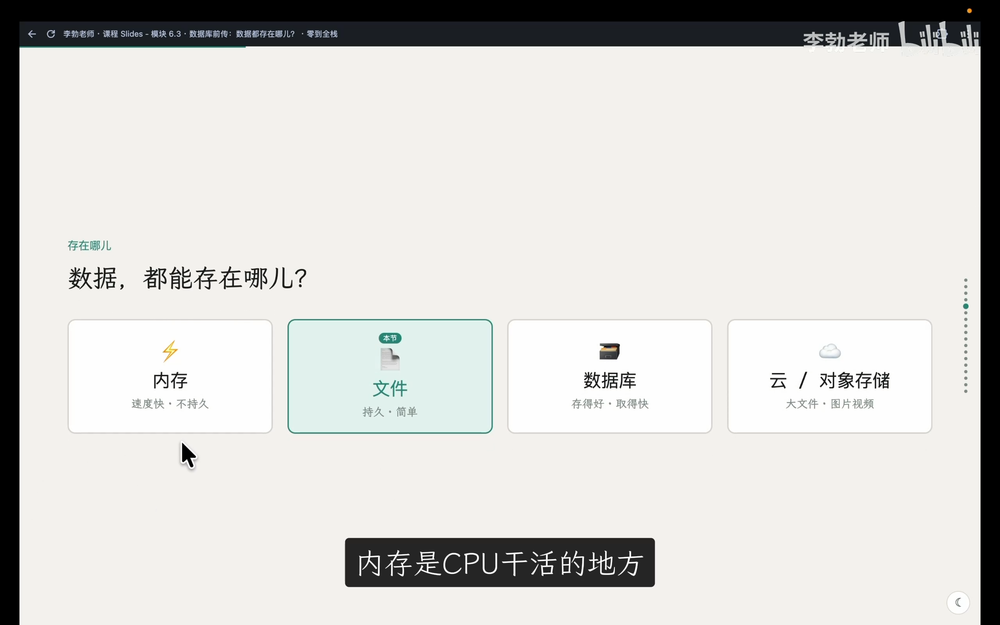
📷 计算机四大存储载体全貌对比图解
在 B 站中打开 (00:05:00)
| 存储形态 | 读写速度 | 易失性 (Persistence) | 适用场景 |
|---|---|---|---|
| 1. 内存 (RAM) | 极快 (纳秒级) | 完全易失 (断电/进程退出即清空) | CPU 运算、临时变量、缓存 |
| 2. 文件 (File) | 较快 (毫秒级) | 持久化 (保存在硬盘中) | 配置文件、简单日志、文档备份 |
| 3. 数据库 (DB) | 快 (含缓存与索引) | 持久化 (带事务与一致性保障) | 结构化业务数据、关系查询、高并发 |
| 4. 对象存储 (OSS/S3) | 受限于网络带宽 | 持久化 (跨机房冗余备份) | 图片、视频、安装包等大体量静态文件 |
3. 深入内存：REPL 实测易失性
(参考时间: 05:50)
我们日常编写的代码，本质上就是一个不断在读写内存的过程。每一个定义的变量，都驻留在操作系统的物理内存（RAM）中。
在终端启动 Python REPL 验证：
>>> brothers = ["刘备", "关羽", "张飞"]
>>> brothers
['刘备', '关羽', '张飞']
只要当前的 Python 进程持续运行，brothers 随时可以秒级读取。
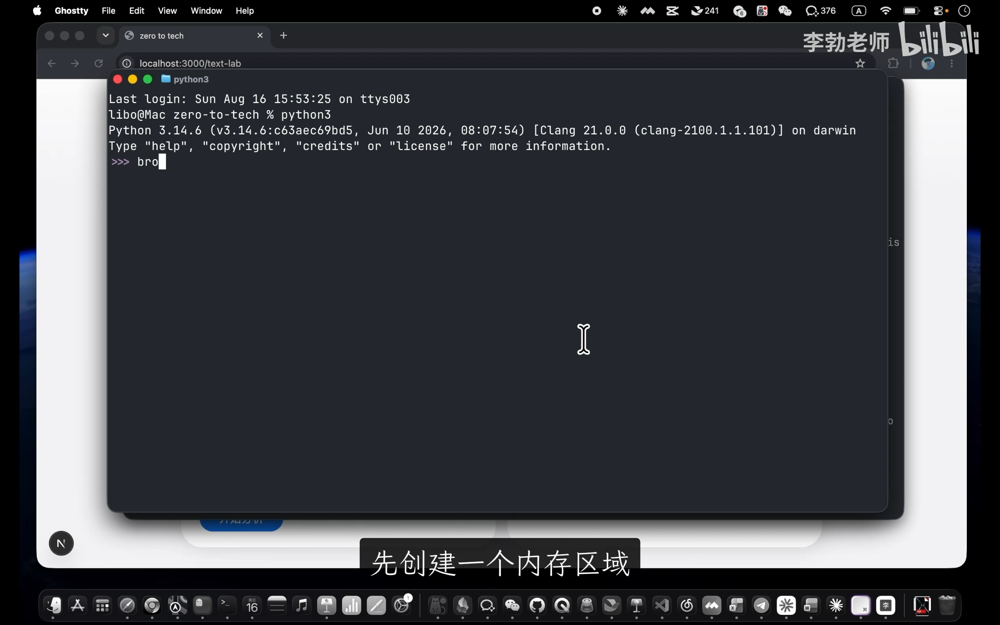
📷 终端 REPL 中创建内存变量并验证其易失性
在 B 站中打开 (00:06:30)
现在，敲入 exit() 退出 REPL，重新启动并再次访问：
>>> brothers
NameError: name 'brothers' is not defined
变量彻底消失！因为当进程退出时，操作系统会将其占用的内存空间整体回收。前端 React 组件的状态刷新即失、后端未做持久化的全局变量重启即丢，底层皆是同一个物理法则。
搞清概念：内存（RAM）vs 存储（Disk）
许多新手在购买电脑或云主机时经常混淆这两项配置： * 内存（RAM，如 16GB / 32GB）：CPU 的临时工作台，速度极快但容量有限，掉电即失； * 存储（Disk/SSD，如 512GB / 1TB）：存放文件与系统的永久仓库，断电后数据安然无恙。
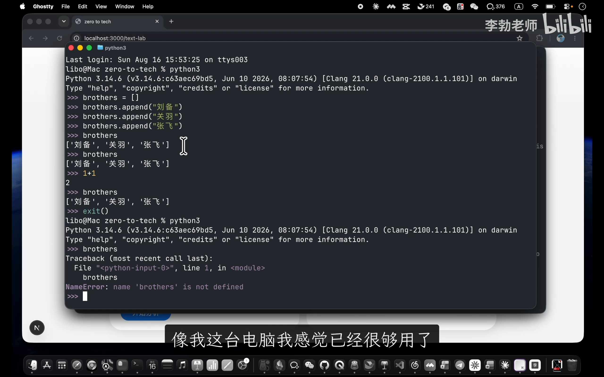
📷 买电脑配置时内存与存储硬盘的核心差异解析
在 B 站中打开 (00:08:35)
对于文字实验室的历史记录，我们显然必须将数据写入硬盘（文件）。
4. 存储格式抉择：CSV/文本 vs JSON
(参考时间: 09:20)
要把用户的每一次分析记录落盘到硬盘，我们必须明确两件事： 1. 存什么内容； 2. 用什么格式存。
记录元数据设计
一条标准的用户分析记录应包含 5 个核心维度：
* text：用户提交的原始文本；
* score：情感模型打分；
* label：情绪分类标签；
* pinyin：带声调的拼音列表；
* created_at：记录产生的绝对时间戳。
格式陷阱：为什么不能简单用逗号分隔（CSV/纯文本）？
最朴素的想法是每条记录写一行纯文本，字段之间用逗号 , 分隔。
但这种设计极其脆弱！
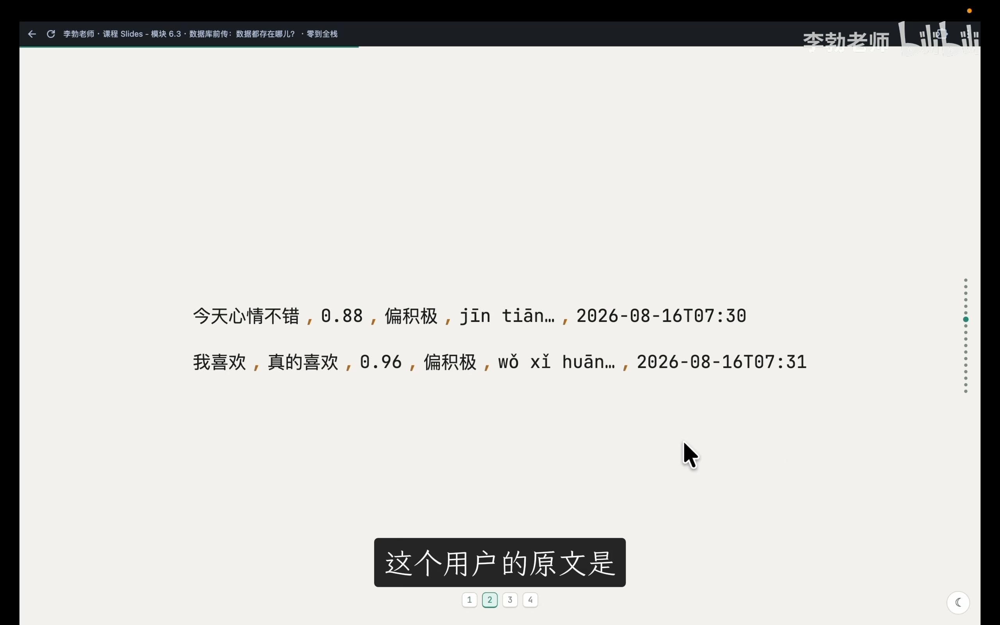
📷 CSV 纯文本以逗号分隔时由于正文自带逗号引发的解析错位陷阱
在 B 站中打开 (00:10:45)
当用户输入包含逗号的句子时（如：我喜欢，真的喜欢）：
* 写入时毫无异样；
* 读取解析时，程序按照逗号切分，原句被腰斩为两截，导致整行字段错位、数据彻底错乱！
虽然可以通过自行定义转义规则（如用引号包裹内部逗号）来修复，但永远不要自行发明转义规则。
黄金标准：拥抱通用 JSON
JSON（JavaScript Object Notation）拥有成熟自洽的标准：
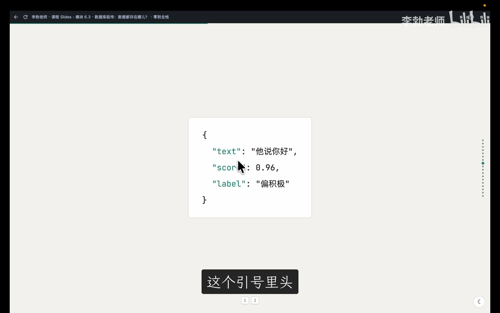
📷 JSON 格式结构化表达与自动转义优势展示
在 B 站中打开 (00:11:45)
- 每个字段均有明确的键名键值对；
- 即使文本内部包含双引号或特殊字符，Python 的
json标准库也会全自动完成规范转义（如\"），完全不需要开发者手写脏活。
5. 时间的陷阱：时区与 UTC 规范
(参考时间: 13:30)
在记录中引入时间字段看似简单，却暗藏着一个巨大的跨国工程陷阱——时区（Timezone）。
如果直接调用 datetime.now()，获取的是当前服务器所在操作系统的本地时间：
* 若服务器部署在广州，记录显示 15:00；
* 若服务器部署在美西硅谷，记录显示 23:00。
两台跨国服务器上的同样日志，物理时刻完全对不上，排查问题将陷入巨大混乱！
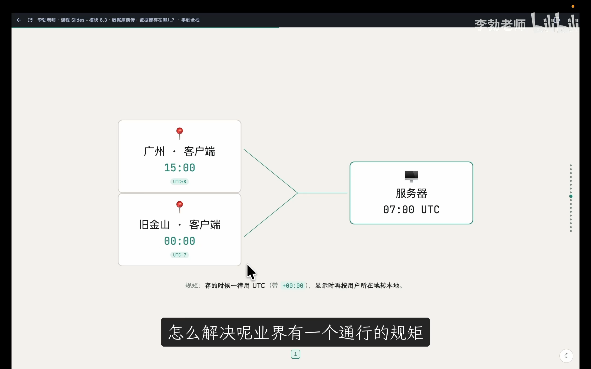
📷 跨时区服务器与用户协同中的时间混乱问题
在 B 站中打开 (00:14:20)
[!IMPORTANT] 全栈时间处理的黄金法则： 1. 存储时一律归一化为 UTC：UTC（协调世界时，伦敦格林尼治零度经线标准时）是全球通用的绝对物理时间刻度； 2. 展示时按用户当地时区渲染：例如中国用户按 UTC+8 转换为北京时间，旧金山用户按 UTC-7 转换。 内部系统通信与数据落盘永远只认 UTC ISO-8601 格式字符串（如
2026-09-15T02:40:00Z）。
6. 代码实战：构建 JSON 文件存储引擎
(参考时间: 16:00)
打开 zero-to-tech/backend/main.py，逐步注入文件持久化能力。
步骤 1：导入标准库
在文件顶部引入标准库（Python 内置，无需额外 pip install）：
import json
from datetime import datetime, timezone
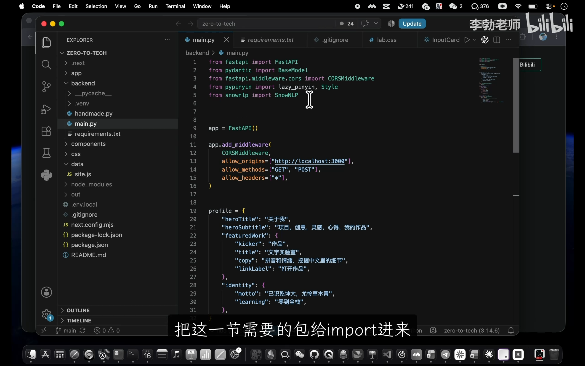
📷 main.py 顶部导入 json 与 datetime 标准库
在 B 站中打开 (00:16:30)
步骤 2：封装底层文件读写函数
在路由上方定义持久化路径与辅助函数：
HISTORY_FILE = "history.json"
def load_history():
"""从磁盘文件中读取全部历史记录"""
try:
with open(HISTORY_FILE, "r", encoding="utf-8") as f:
return json.load(f)
except FileNotFoundError:
return []
def save_record(record):
"""追加单条记录并全量持久化落盘"""
records = load_history()
records.append(record)
with open(HISTORY_FILE, "w", encoding="utf-8") as f:
json.dump(records, f, ensure_ascii=False, indent=2)
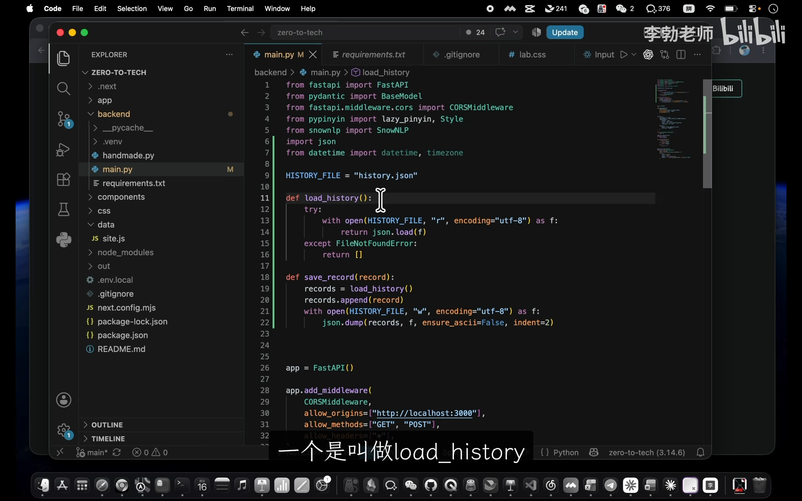
📷 编写 load_history 与 save_record 全量读写函数
在 B 站中打开 (00:17:30)
步骤 3：在 analyze 路由中埋点入库
修改 POST /api/analyze 路由：在向前端返回响应前，组装带有 UTC 时间戳的完整字典，并调用 save_record：
@app.post("/api/analyze")
def analyze(req: AnalyzeRequest):
text = req.text
score = round(SnowNLP(text).sentiments, 2)
result = {
"text": text,
"score": score,
"label": score_label(score),
"pinyin": " ".join(lazy_pinyin(text, style=Style.TONE)),
"created_at": datetime.now(timezone.utc).isoformat(),
}
# 持久化落盘
save_record(result)
return result
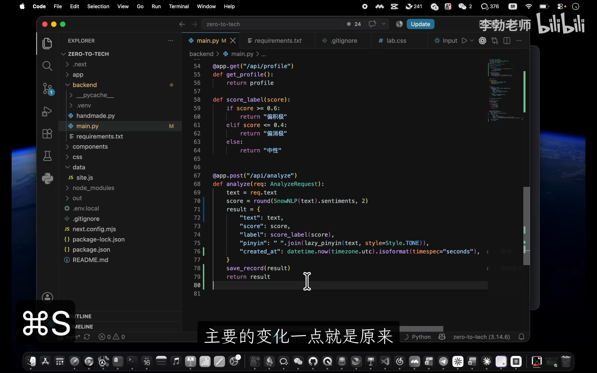
📷 analyze 路由组装 created_at 实体并执行 save_record
在 B 站中打开 (00:19:30)
[!NOTE] 接口返回从 4 个字段扩展为 5 个字段（追加
created_at）。这符合向后兼容契约原则：老前端不认识新字段会直接忽略，绝不会引发崩溃。
步骤 4：新增历史记录查询接口
在文件末尾新增专用查询接口：
@app.get("/api/history")
def history():
"""获取所有历史分析记录"""
return load_history()
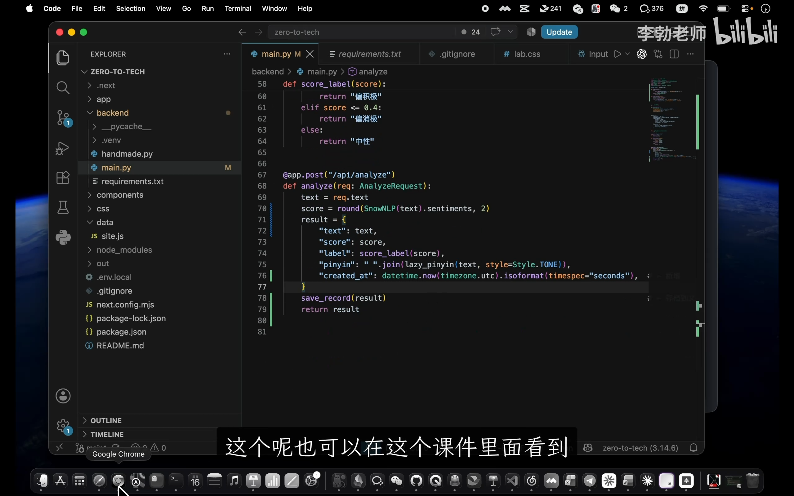
📷 新增 GET /api/history 读取接口代码
在 B 站中打开 (00:21:00)
7. 联调验证：curl 探测与浏览器可视化
(参考时间: 21:55)
重启前后端服务，首先使用 curl 探测新接口：
curl http://localhost:8000/api/history
返回 []，符合初始为空的预期。
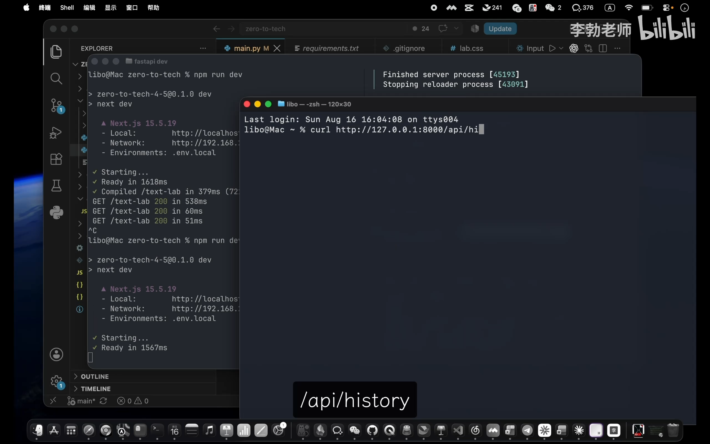
📷 curl 探测 /api/history 接口初始状态返回空列表
在 B 站中打开 (00:22:30)
接下来在浏览器中打开 http://localhost:3000/text-lab，连续提交多句测试文本：
1. 这部电影很不错；
2. 包含英文引号的文本：我正式圈朋友们学一点计算机技术，写个什么"牛来"。
提交完毕后，直接在浏览器中访问 http://localhost:8000/api/history：
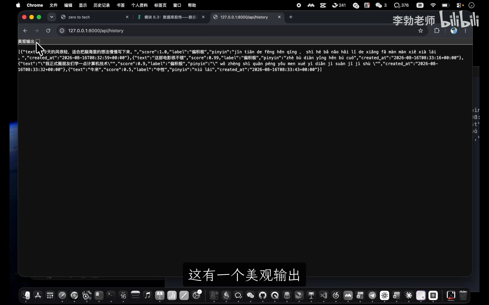
📷 浏览器访问 /api/history 格式化展示已持久化的多条分析记录
在 B 站中打开 (00:24:00)
浏览器中勾选“美观输出”，清晰呈现出规整的 JSON 列表！
8. 查询能力进阶：倒序与切片
(参考时间: 24:15)
随着历史记录不断累积，用户通常更希望最新产生的记录排在最上方，且首屏只加载最新的前几条。
我们在 history 路由中加入 Python 原生列表反转与切片语法：
@app.get("/api/history")
def history():
records = load_history() # 读出文件里的全部记录
records.reverse() # 1. 就地倒序：让最新记录位列最前
return records[:2] # 2. 列表切片：截取最新的前 2 条演示
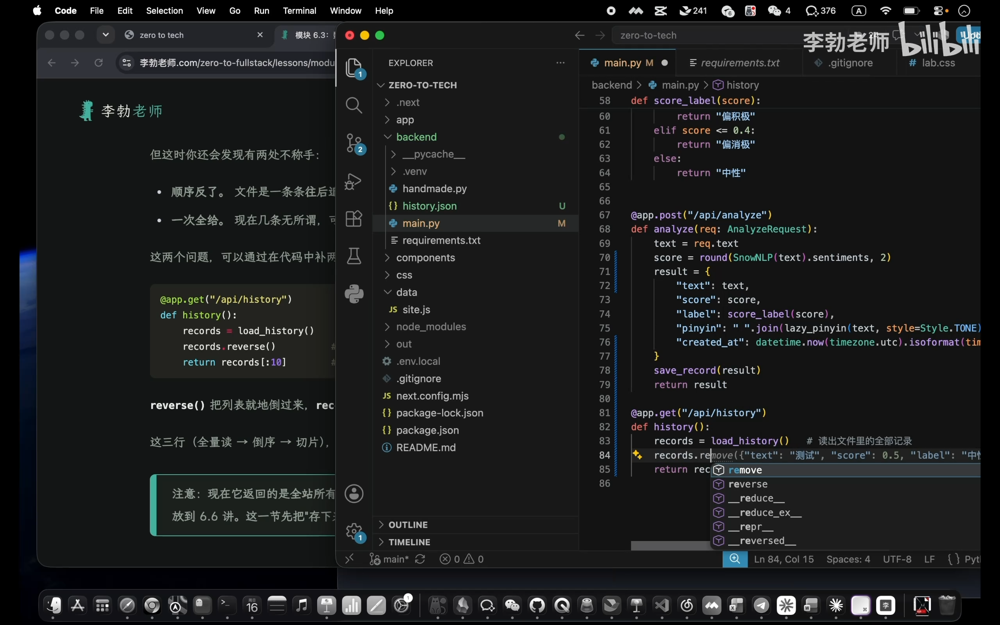
📷 在接口中增加 records.reverse 与切片逻辑
在 B 站中打开 (00:25:30)
再次访问接口，最新提交的记录瞬间置顶，且数量精准受控。此时查看 VS Code 左侧，history.json 文件已真实稳固落盘：
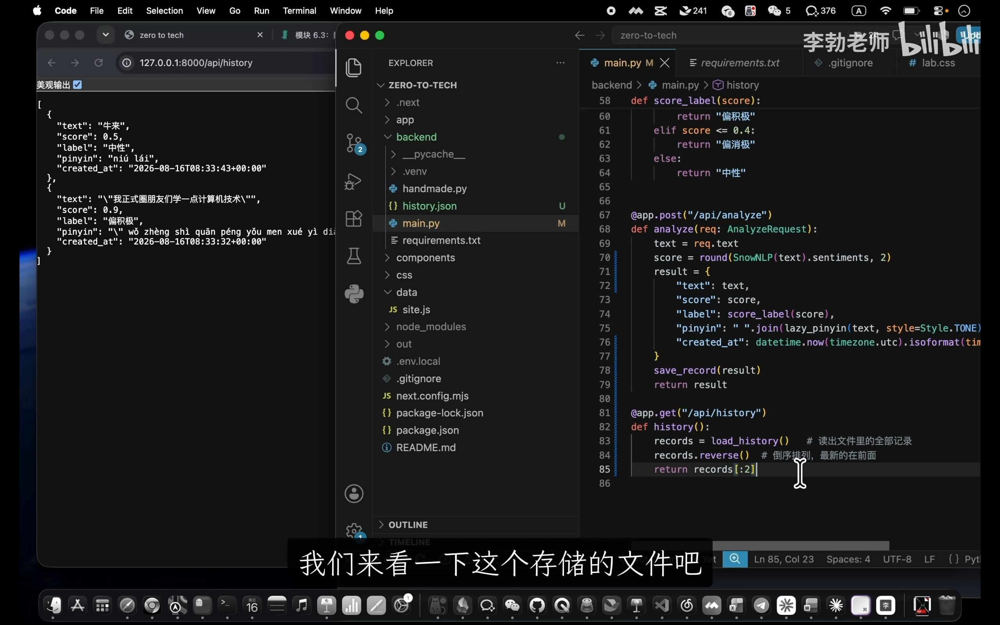
📷 浏览器与 VS Code 联动：确认最新记录置顶截取且 history.json 真实落盘
在 B 站中打开 (00:27:00)
数据成功完成持久化落盘（Persisted to Disk）！无论如何杀死进程、重启电脑，历史记录永不丢失。
9. 方案反思：文件存储的三大致命天花板
(参考时间: 27:30)
至此，我们的简易文件存储系统运行良好。但在真实的互联网生产环境中，这种“基于单个文件的整存整取”模式隐藏着三个足以摧毁系统的致命隐患：
flowchart TD
subgraph Bottleneck1 ["致命天花板 1：性能雪崩 (I/O 放大)"]
AppendOne["新增 1 条数据"] --> LoadAll["必须在内存读出已有 10,000 条"]
LoadAll --> DumpAll["必须将 10,001 条整份重写刷入磁盘"]
DumpAll -->|O(N) 读写放大| IOHalt["磁盘 I/O 阻塞，响应延迟暴增"]
end
subgraph Bottleneck2 ["致命天花板 2：并发冲突 (脏写与脏读)"]
UserA["用户 A: 分析'今晚夜色真美'"]
UserB["用户 B: 分析'这车动力很足'"]
UserA & UserB -->|同时读取| SameState["都读取到相同的前置 100 条"]
UserA -->|第 1 毫秒写回 101 条| Overwrite1["写入文件 (含 A)"]
UserB -->|第 2 毫秒写回 101 条| Overwrite2["覆写文件 (含 B 但抹杀 A!)"]
Overwrite2 -->|A 的记录永久丢失!| DirtyWrite["典型脏写 (Dirty Write) 灾难"]
end
subgraph Bottleneck3 ["致命天花板 3：一坏全坏 (缺乏原子性)"]
Writing["正在写入 10MB 的 JSON 字符串..."]
PowerCut["突然断电 / 进程崩溃 / 硬盘写满"]
Writing --> PowerCut
PowerCut --> CorruptJSON["末尾缺失花括号 }]"]
CorruptJSON --> Panic["json.load() 语法报错，全部历史记录瞬间归零!"]
end
天花板 1：性能雪崩（I/O 读写放大）
观察 save_record 的逻辑：无论新记录多小，都必须将整个文件全量读入内存、再全量刷回磁盘。
当数据达到 10 万条时，哪怕只追加一个字，也必须承受整整 10 万条记录的磁盘 I/O 序列化与反序列化，系统吞吐量将出现断崖式下跌。
天花板 2：并发竞态（脏写与脏读）
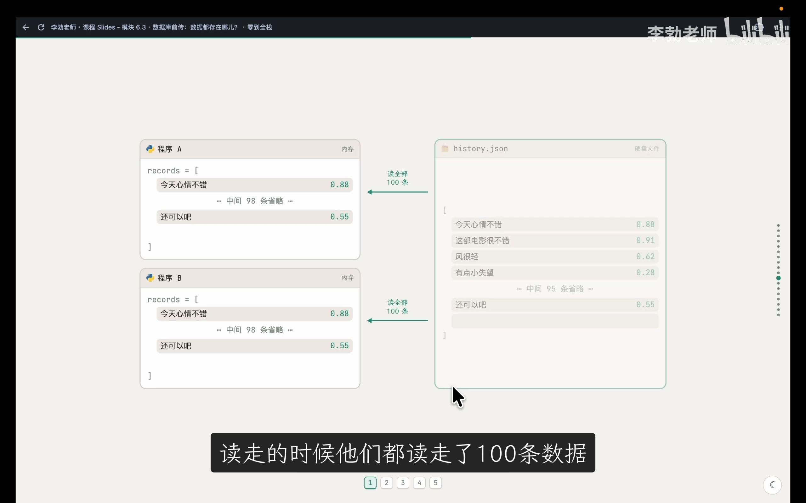
📷 高并发下前后脚覆写导致一方数据凭空蒸发的脏写原理图解
在 B 站中打开 (00:29:45)
现代 Web 服务器是多线程/多进程并发处理请求的：
1. 用户 A（提交“今晚夜色真美”）与用户 B（提交“这车动力很足”）几乎在同一毫秒发起请求；
2. 两人同时执行 load_history()，内存中拿到的都是原本的旧数组；
3. A 在自身内存中追加后率先写回磁盘；
4. 紧接着 1 毫秒后，B 也将自己追加后的数组全量写回磁盘，强行覆盖了 A 刚写入的文件！
5. 用户 A 的记录在没有任何报错的情况下凭空彻底蒸发！这就是计算机科学中臭名昭著的脏写（Dirty Write）。
同理，当一个请求写了一半，另一个请求刚好读取，读到的将是破损的中间状态，构成脏读（Dirty Read）。
天花板 3：一坏全坏（缺乏原子性 ACID）
在写回磁盘的纳秒窗口期内，一旦服务器突然断电或内存溢出崩溃，文件末尾可能只写了一半。
由于缺少关闭括号，下一次调用 json.load() 将直接抛出解析异常，导致整份文件的全部历史数据陪葬，不可恢复！
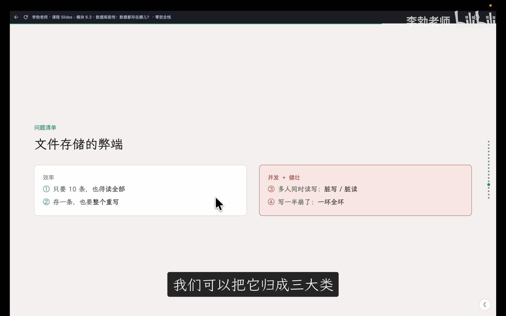
📷 文件存储三大痛点与数据库事务引擎必然性总结
在 B 站中打开 (00:32:45)
10. 业务合规深思与后续路线规划
(参考时间: 34:30)
在进入数据库实战前，我们还需要审视一个非技术层面的关键合规问题：
当前 history.json 把所有不相识访客的输入混在一起公开展出。
[!CAUTION] UGC 内容与互联网合规红线： 最终用户自行上传的内容属于 UGC（User Generated Content）。 在中国互联网法规中，将不特定访客的 UGC 内容公开展示在页面上，需要专门的经营性牌照与严格的先审后发资质，个人备案网站严禁涉足此类公开展出。
合理的业务边界是：每个用户只能查看自己曾经提交过的历史记录。 要做到这一点，系统必须具备识别用户的能力： 1. 第一层：会话体系（Session）：在不强制登录的前提下，利用 Cookie 机制记住当前浏览器，让同一个浏览器在多次请求与刷新间保持关联（我们将在第 29 讲 6.6 中深度攻坚）； 2. 第二层：账号与认证体系（Auth）：账号、密码、Token、加密与权限控制（涉及庞大的安全工程）。
11. 本讲小结与下节展望
(参考时间: 38:00)
在本讲中，我们完成了两项关键认知跃升与代码实践： * 实践落地：用最接地气的文件系统实现了持久化，掌握了时区与 UTC 处理的最佳实践，成功给文字实验室注入了“记忆”； * 瓶颈叩问：深刻论证了普通文件面对高并发在线增删查改时的无力感，为引入工业级存储扫清了认知障碍。
如何解决单条记录高效检索追加？如何让成千上万个并发请求互不冲突？如何保证即使断电数据也绝不损坏？ 业界给出的终极答案是：数据库（Database）与事务（Transaction）机制。
在下一讲（第 27 讲：6.4 数据库正传——SQL 与 SQLite）中，我们将正式推开数据库神殿的大门，结识轻量级关系型数据库之王 SQLite，掌握结构化查询语言 SQL，用专业武器彻底终结文件存储的痛点！